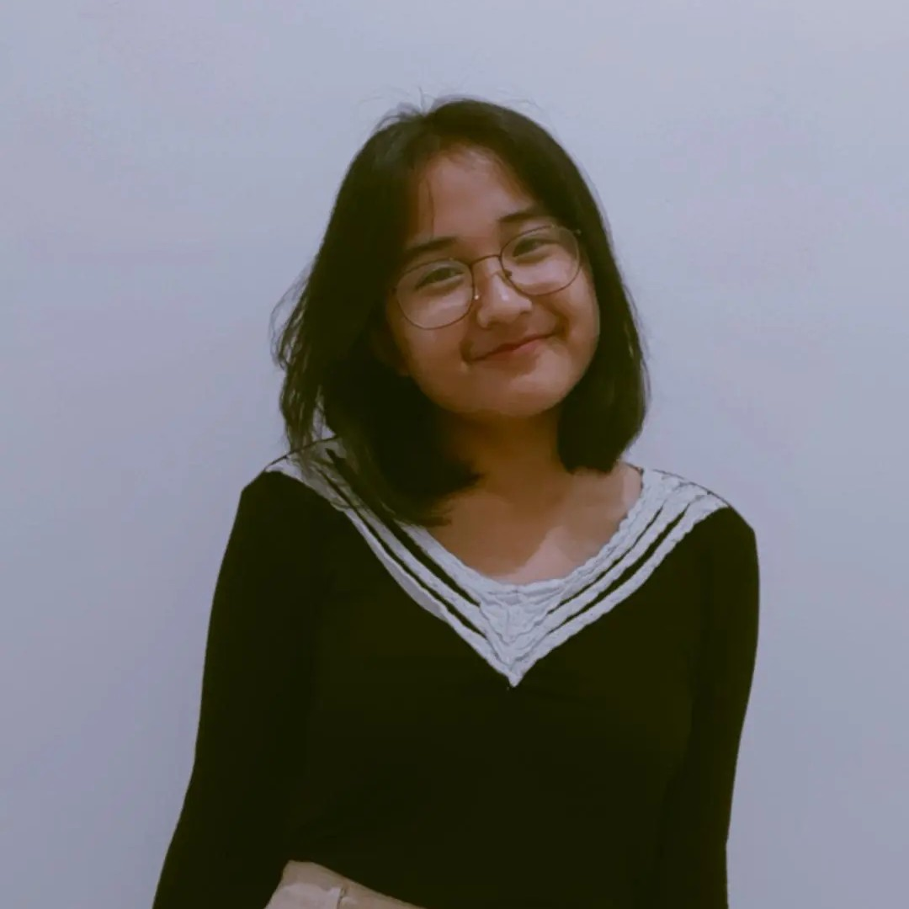

Belinda Chefri Linggi

Summary
A highly motivated and detail-oriented individual with experience in project management, public speaking, and technical skills in web development. Strong leadership and communication abilities, demonstrated through roles in managing projects and leading teams. Passionate about continuous learning and personal development.
Education
- Bachelor’s Degree in Information Technology, Telkom University (Graduated 2025)
Work experience
-
Project Manager - Kelana Agency
March 2025 - Present
- Oversee project execution and ensure timely delivery of client requirements.
- Coordinate between teams to optimize workflow efficiency.
- Manage client communication and project documentation.
-
Intern - Faculty of Informatics, Telkom University
2023
- Assisted the Secretariat of the Faculty of Informatics in a website revitalization project.
- Worked on updating the S1 Information Technology program website according to the user manual standards set by the Directorate of Information Technology Center at Telkom University.
- Collaborated with faculty staff to ensure seamless integration of new website features.
-
Master of Ceremony (MC) & Moderator - Freelance
2022 - Present
- Hosted various events with audiences ranging from 50 to 300 participants.
- Served as a talk show moderator for professional discussions with industry experts.
- Adapted to both formal and fun hosting styles depending on event needs.
Skills
- Communication & Organization: ⭐️⭐️⭐️⭐️⭐️
- Leadership & Team Coordination: ⭐️⭐️⭐️⭐️⭐️
- Project Management: ⭐️⭐️⭐️⭐️⭐️
- Canva & Graphic Design: ⭐️⭐️⭐️⭐️
- Microsoft Office (Word, Excel, PowerPoint): ⭐️⭐️⭐️⭐️⭐️
Awards & Certifications
- Dicoding Certificate: Basic AI & Data Science
- Dicoding Certificate: Basic Project Management
- Udemy Web Development Course (In Progress)
- 3rd Place - Open Library Book Review Competition (Telkom University Open Library)
- Recognition for Outstanding Contributions in Community Events